CS 180 · Project 4A + 4B · Fall 2026
Image Warping
and Mosaicing
https://izatr2004.github.io/project-website/proj4/
From landmark-based warping to automatic panoramas with Harris corners, normalized patches, and RANSAC.
A.1: Source photographs - Living room and television
The living-room pair extends from the bookshelf on the left to the television and guitar on the right. The television corners, poster frame, and power strip provide recognizable shared landmarks. The dark, reflective screen contains little reliable texture.
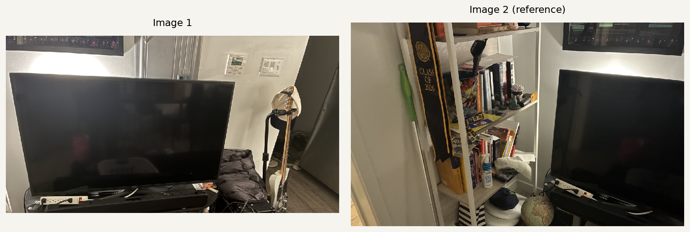
Personal iPhone 16e photographs taken for this project. Copies are oriented and resized to at most 1200 pixels on the longest side. The lower edges of the living-room and bookshelf inputs are cropped.
All final input photographs are personal. The three handheld pairs were captured by changing the viewing direction. Rotation was approximate: nearby objects show parallax, discussed alongside the mosaic results. The building rectification reuses a photograph from Project 0.
A.1: Source photographs - Kitchen counter
The kitchen pair contains the refrigerator, cabinets, counter, and sink. The views share the rice bag, hanging gloves, toaster, and faucet. These objects lie at different depths, making this pair sensitive to small changes in camera position.
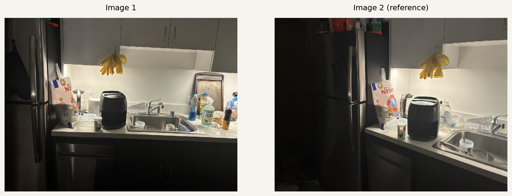
Personal iPhone 16e photographs taken for this project. Copies are oriented and resized to at most 1200 pixels on the longest side. The lower edges of the living-room and bookshelf inputs are cropped.
A.1: Source photographs - Bookshelf and doorway
The bookshelf pair shares the caps, printed sheet, and stacked books. These retaken views have a large overlap and add the framed poster on the right. The shelf structure and objects at different depths expose the limits of one projective transformation.
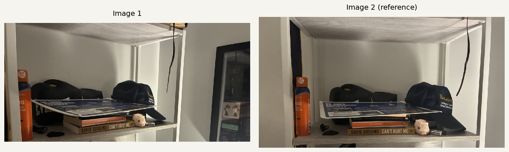
Personal iPhone 16e photographs taken for this project. Copies are oriented and resized to at most 1200 pixels on the longest side. The lower edges of the living-room and bookshelf inputs are cropped.
A.2: Recovering a homography
A homography maps a source point (x, y) to a reference point (u, v). Dividing by the last homogeneous coordinate gives two equations per match. Setting h33 = 1 leaves eight unknowns.
u = (h11 x + h12 y + h13) / (h31 x + h32 y + 1) v = (h21 x + h22 y + h23) / (h31 x + h32 y + 1) [ x y 1 0 0 0 -ux -uy ] h = u [ 0 0 0 x y 1 -vx -vy ] h = v h = [h11 h12 h13 h21 h22 h23 h31 h32]^T A has shape (2N, 8); b = [u1 v1 ... uN vN]^T. h = argmin ||Ah - b||^2
computeH(im1_pts, im2_pts) builds this system and calls NumPy's least-squares solver. Coordinates are first centered and scaled so their mean distance from the origin is sqrt(2). If Hn is the solution in these normalized coordinates, the pixel-coordinate matrix is H = T2-1 Hn T1. Finally, H is divided by its bottom-right entry.
Each panorama uses more than four landmarks. The television landmarks were identified by inspection and locally refined with normalized patch correlation. For the kitchen and bookshelf, SIFT supplied candidate locations that were reviewed and stored as fixed correspondences. Every displayed H is then recovered by the custom least-squares solver. No library homography estimator or perspective warp is used.
| Pair | Matches | RMS error (px) | Max error (px) |
|---|---|---|---|
| Living room and television | 8 | 1.410 | 2.118 |
| Kitchen counter | 15 | 17.060 | 41.176 |
| Bookshelf and doorway | 17 | 24.275 | 41.193 |
Errors are forward reprojection residuals on the fitted landmarks. The larger indoor residuals reflect depth-dependent parallax and imperfect pair locations. A single H cannot align every depth when the camera center shifts. These are fit measurements, not independent test errors.
A.2: Correspondences - Living room and television
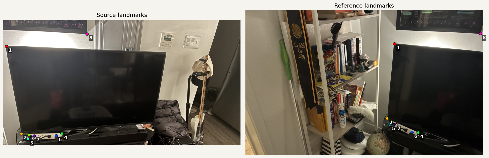
H = [ 0.1734580 -0.0483083 771.5116777 ] [ -0.0746156 0.9364028 47.7263049 ] [ -0.0007273 0.0002215 1.0000000 ]
The matrix maps image 1 into image 2. The 8 matches form a 16 by 8 least-squares system. The forward reprojection RMS residual is 1.410 pixels.
A.2: Correspondences - Kitchen counter
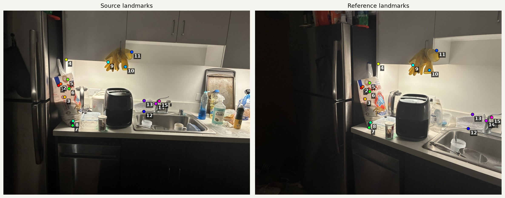
H = [ 0.2552689 -0.3143961 416.7670561 ] [ -0.1857467 0.4763124 139.1545179 ] [ -0.0005579 -0.0003943 1.0000000 ]
The matrix maps image 1 into image 2. The 15 matches form a 30 by 8 least-squares system. The forward reprojection RMS residual is 17.060 pixels.
A.2: Correspondences - Bookshelf and doorway
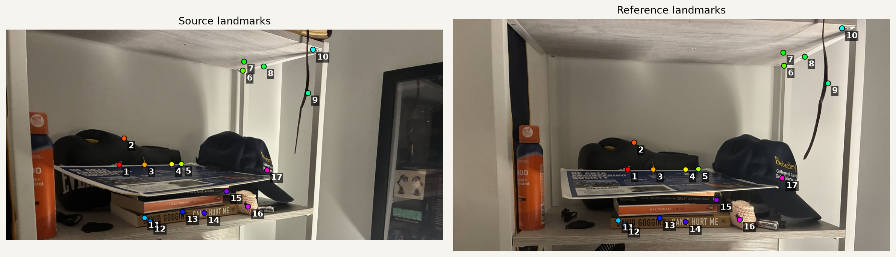
H = [ 0.7672974 -0.5288047 370.1795019 ] [ -0.0647551 0.8603432 55.1691552 ] [ -0.0000993 -0.0002780 1.0000000 ]
The matrix maps image 1 into image 2. The 17 matches form a 34 by 8 least-squares system. The forward reprojection RMS residual is 24.275 pixels.
A.3: Inverse warping and interpolation
Both warp functions use inverse mapping. First, project the four source corners through H to determine a destination bounding box. Floor the minimum coordinates and ceil the maxima. Negative destination coordinates are preserved through a stored canvas offset.
For each integer destination pixel center, apply H-1 and divide by the resulting homogeneous coordinate. Sample the source only when that coordinate lies inside its valid pixel-center rectangle. A separate Boolean mask distinguishes missing samples from valid black pixels.
[sx sy 1]^T ~ H^-1 [dx dy 1]^T
Nearest: I(round(sx), round(sy))
Bilinear: x0=floor(sx), y0=floor(sy)
a=sx-x0, b=sy-y0
I(sx,sy) = (1-a)(1-b) I(x0,y0)
+ a(1-b) I(x0+1,y0)
+ (1-a)b I(x0,y0+1)
+ ab I(x0+1,y0+1)
The four bilinear weights sum to one. At the last valid row or column, the neighbor indices clamp to the image boundary. The implementation processes rows in chunks so intermediate coordinate arrays stay small. It uses NumPy arithmetic for both interpolation methods.
For rectification, four selected corners map to the corners of a rectangular target. Only that target is sampled. Unlike panorama fitting, these four exact corner constraints have no redundancy; the assumed rectangle and chosen aspect ratio determine the result.
A.3: Rectification - Glass building facade
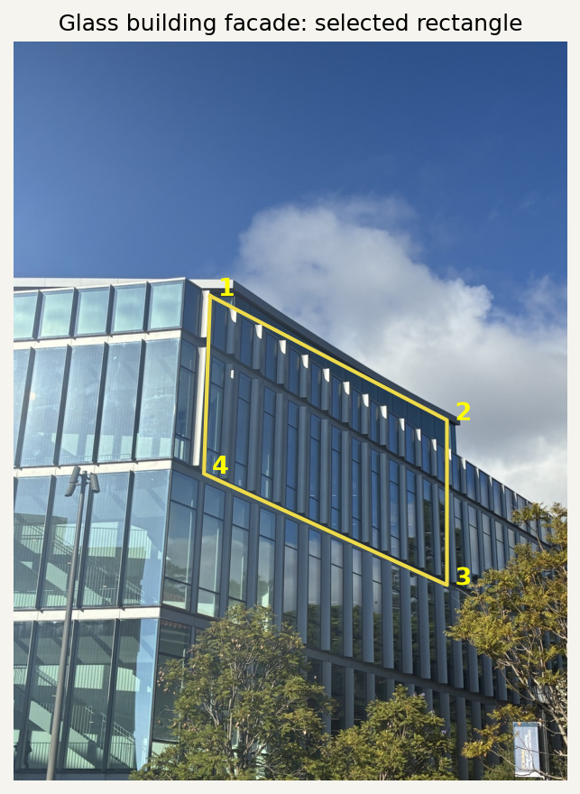
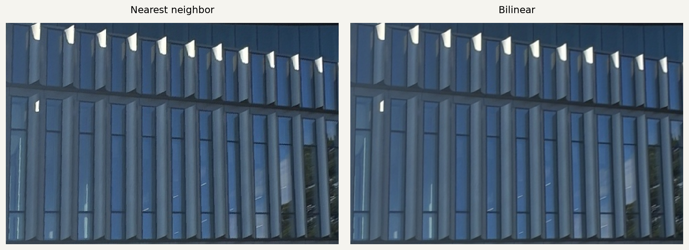
The selected facade is rectangular. Its physical aspect ratio is unknown; 3:2 is a display choice. The output is 900 by 600 pixels.
The receding facade becomes a frontal view: its window divisions are nearly vertical, and the floor bands become nearly horizontal. Bilinear sampling makes the thin frame boundaries smoother.
A.3: Rectification - Framed robotics poster
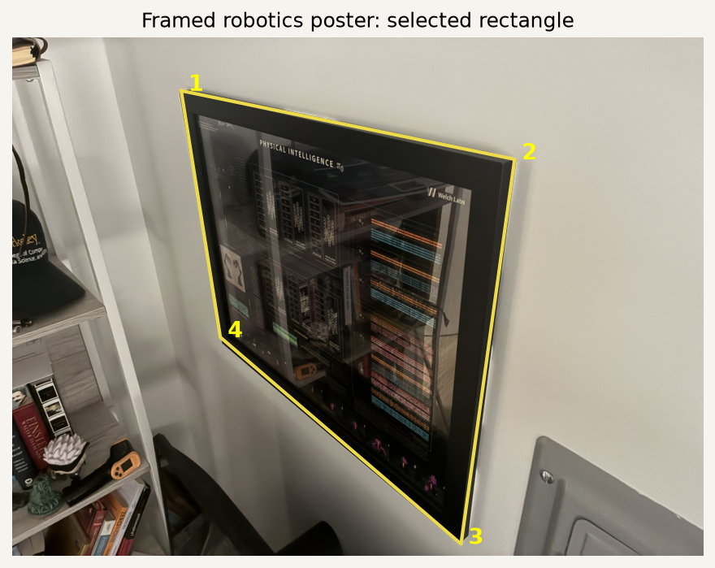
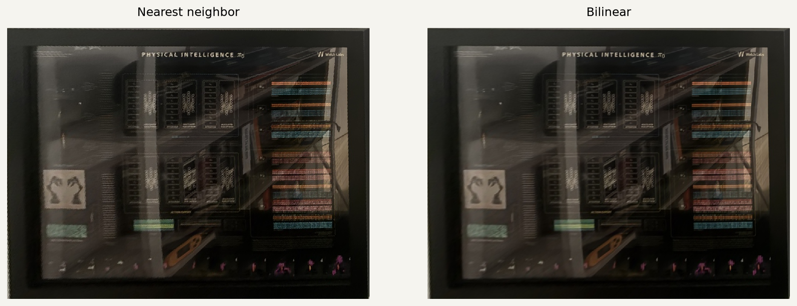
The frame is rectangular. The near-frontal reference photo suggests an aspect ratio near 4:3; a 1000 by 750 target is used. Physical dimensions were not measured. The output is 1000 by 750 pixels.
The oblique frame becomes rectangular and its printed diagrams become easier to compare in a frontal view. Bilinear interpolation smooths the thin lines. Reflections remain in both versions: changing the projection does not remove glare from the glass.
A.3: Quality and speed
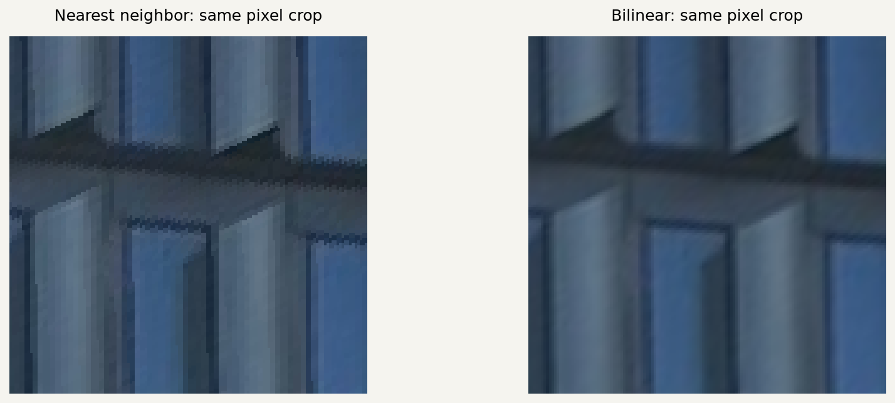
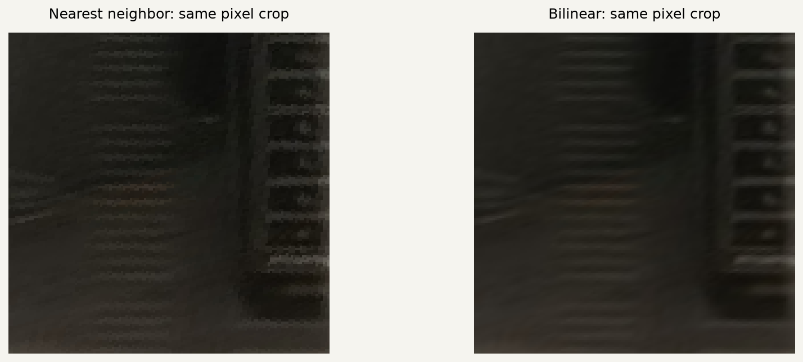
| Rectification | Nearest | Bilinear | Time ratio |
|---|---|---|---|
| Glass building facade | 19.65 ms | 48.68 ms | 2.48x |
| Framed robotics poster | 31.02 ms | 73.55 ms | 2.37x |
These are local CPU medians over five calls after one excluded warm-up call, including inverse coordinate generation and sampling. Both methods use the same target canvas. Bilinear sampling costs more because it gathers four pixels and combines their weights; nearest neighbor gathers one.
The facade crop shows stair steps along diagonal frame edges with nearest neighbor. Bilinear interpolation softens these steps but slightly blurs fine texture. Neither method alone prevents aliasing when a transform strongly shrinks an image; that would require an additional low-pass treatment.
A.4: Blending into a mosaic
The mosaics split the wide change in viewing direction across an intermediate projection. After normalizing the scale of H, compute a real matrix square root S. Image 1 maps through S and image 2 through S-1, so corresponding points still coincide because S-1H = S. This reduces the stretching produced by forcing the whole panorama into one endpoint view.
The canvas is the union of the transformed corners. The living-room example uses source-border-distance feather weights. For the kitchen and bookshelf, a vertical path through low-disagreement overlap pixels selects the join; the weights transition linearly across 15 pixels on each side of that path. All weights are masked and normalized:
w_i = blend_weight_i * validity_i M(x,y) = sum_i [w_i(x,y) * I_i(x,y)] / sum_i w_i(x,y)
A pixel belonging to one source retains that source. Pixels outside both footprints are transparent. Feathering reduces brightness boundaries; a narrow seam also limits broad ghosting. Neither operation corrects the scene geometry or removes glare.
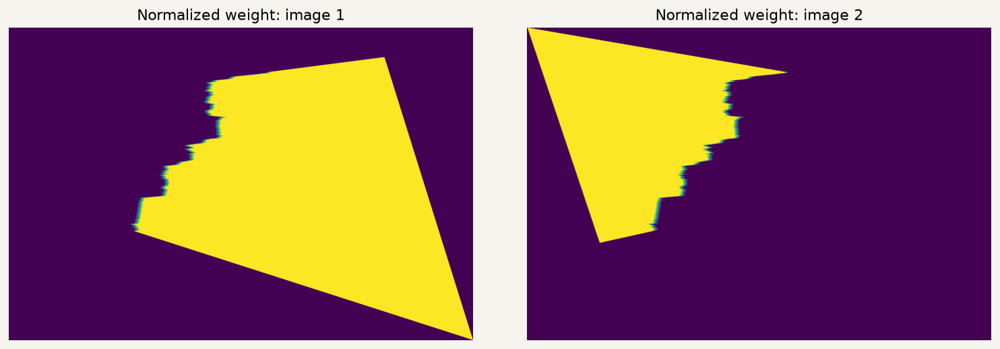
No exposure correction or pyramid blending is applied. The comparisons use identical geometry, changing only the compositing weights.
A.4: Mosaic - Living room and television
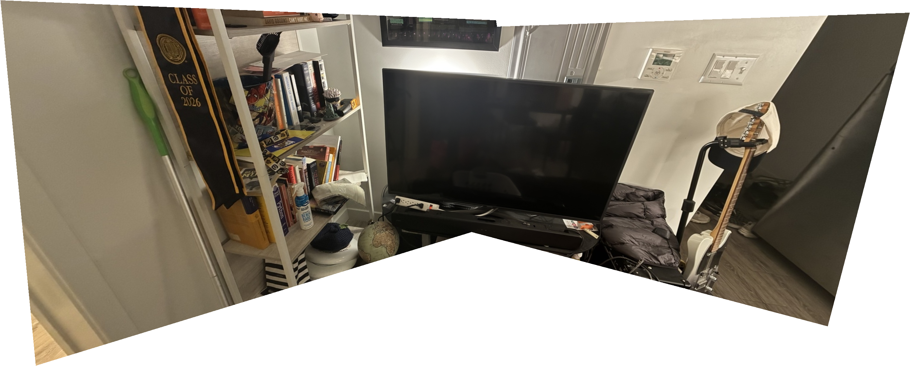
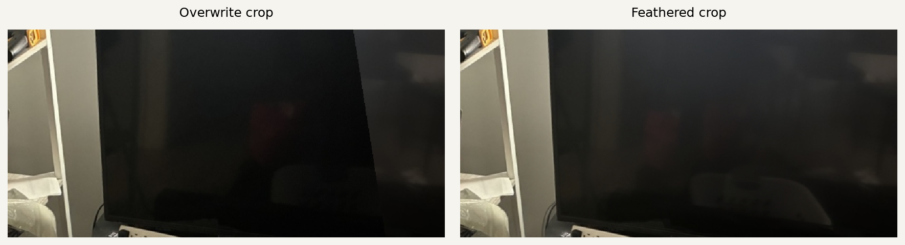
The shared television and power strip register reasonably well, while the two views extend the scene to the bookshelf and guitar. Broad feathering softens the brightness change across the dark screen. The wide planar projection still stretches the outer wall, and small local misalignments remain around objects at different depths.
Canvas: 2798 x 1125 pixels. The source views appear in A.1; the landmarks and H appear in A.2.
A.4: Mosaic - Kitchen counter
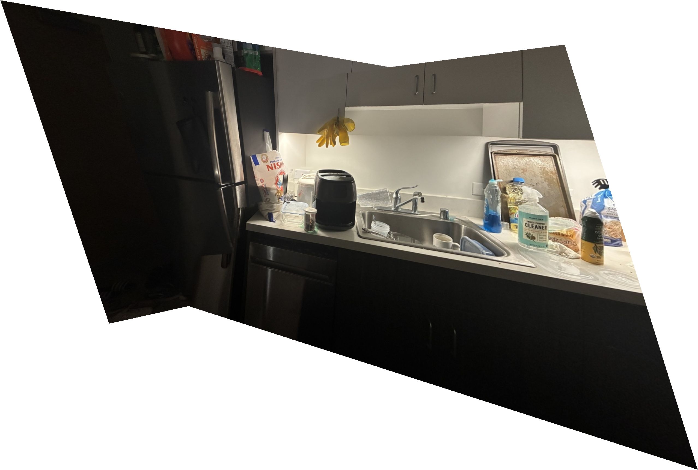
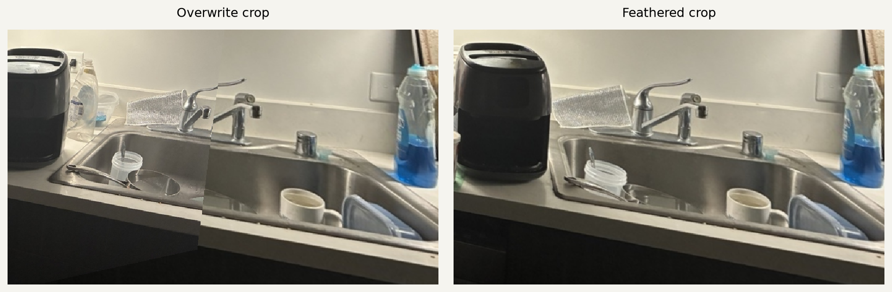
The combined view includes the refrigerator and the right side of the sink. A narrow feathered seam reduces the broad doubled-object appearance of averaging the entire overlap. Cabinet edges and foreground utensils cannot all coincide under one H because of parallax. The darker left view also leaves a visible exposure difference.
Canvas: 2557 x 1723 pixels. The source views appear in A.1; the landmarks and H appear in A.2.
A.4: Mosaic - Bookshelf and doorway
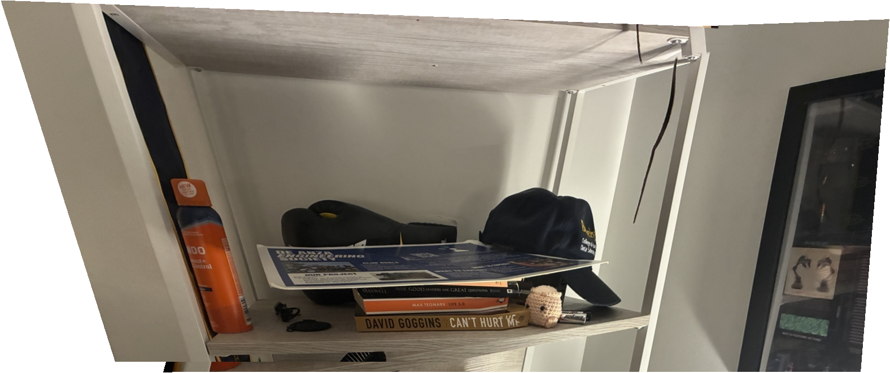
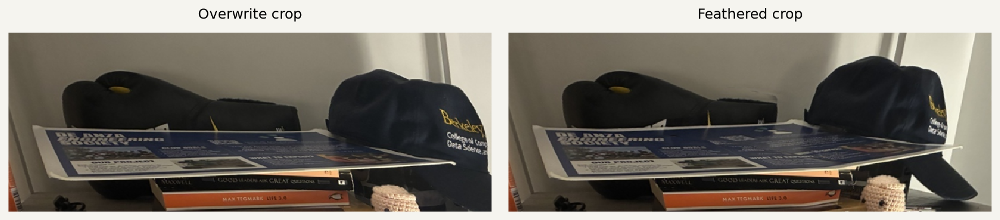
The retaken pair provides enough common texture to combine the shelf with the poster on the right. The seam preserves most of the printed sheet and book text from a single view. The cord, caps, and shelf structure still show local offsets; the high reprojection residual correctly flags that one homography is an imperfect model for these close objects.
Canvas: 1576 x 663 pixels. The source views appear in A.1; the landmarks and H appear in A.2.
What I learned and sources
The indoor captures show why keeping the camera center fixed matters. Remaining in one standing position does not completely fix the lens position: small handheld shifts produce noticeable parallax for nearby objects. A homography can fit one depth well while leaving other depths misaligned. Spread-out correspondences and the measured residuals make that limitation visible.
Inverse warping gives a defined source lookup for every destination pixel and avoids the holes caused by forward splatting. The mask is just as important as the color array: black image content must remain valid, while empty projective margins must not darken the blend.
The interpolation comparison makes a separate tradeoff visible. Nearest neighbor is fast and preserves hard pixel values; bilinear interpolation uses more work to make subpixel movement look smoother. Blending then addresses another issue, the boundary between already registered images.
Sources and reproducibility
- IMG_4893: Personal iPhone 16e photograph captured for Project 4A. Source.
- IMG_4894: Personal iPhone 16e photograph captured for Project 4A. Source.
- IMG_4895: Personal iPhone 16e photograph captured for Project 4A. Source.
- IMG_4896: Personal iPhone 16e photograph captured for Project 4A. Source.
- IMG_4903: Personal iPhone 16e photograph captured for Project 4A. Source.
- IMG_4904: Personal iPhone 16e photograph captured for Project 4A. Source.
- IMG_4908: Personal iPhone 16e photograph captured for Project 4A; photographed framed poster credited to Welch Labs. Source.
- IMG_4909: Personal iPhone 16e photograph captured for Project 4A; photographed framed poster credited to Welch Labs. Source.
- Building facade (Project 0): Personal photograph reused from Project 0. Source.


The resized inputs and SHA-256 checksums are recorded in sources.json. main.py reproduces the figures and metrics; geometry.py contains computeH and both inverse-warp implementations.
B.1: Harris corner detection
Part B replaces saved landmark correspondences with features detected and matched directly from the photographs. The three personal image pairs and the Part A inverse warper and blending methods are reused. The automatic alignment function receives image arrays and scalar settings; it never receives the Part A point pairs.
The detector uses Sobel gradients and a Gaussian integration window with sigma = 1. Following the harmonic Harris response used by the provided sample, the structure tensor and corner score are:
M = Gaussian_sigma=1 * [[Ix^2, Ix Iy], [Ix Iy, Iy^2]] f = det(M) / (trace(M) + 1e-12)
Candidate corners are positive 3 x 3 local maxima above 0.001 times the image's maximum response. A 20-pixel border is excluded so a 40 x 40 descriptor support fits in the image. This implementation uses one scale and integer feature positions.
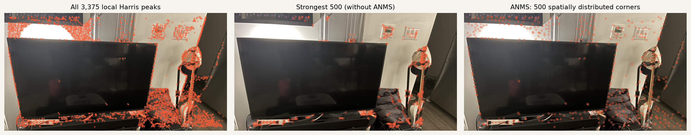
Strong responses cluster on detailed objects and high-contrast edges. Spatial suppression preserves more of the room's coverage, which matters when only part of an image overlaps its neighbor. A textureless television screen still supplies few stable features.
B.1: Adaptive non-maximal suppression
For each candidate i, ANMS finds the distance to the nearest candidate whose corner response is significantly stronger. A response within ten percent of the maximum is therefore not suppressed by an almost equal neighbor:
r_i = min_j ||p_i - p_j||, subject to f_i < 0.9 f_j No qualifying neighbor: r_i = infinity. Keep the 2,500 largest radii (or all candidates if fewer exist).
Ties are resolved by response strength and then input index. Distances are processed in blocks to avoid storing the full candidate-by-candidate matrix. The figures use 500 selected points for visibility; the actual descriptor and matching runs retain up to 2,500 per image.
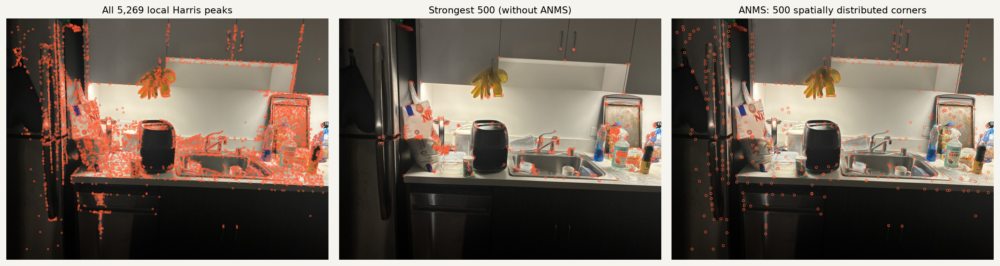
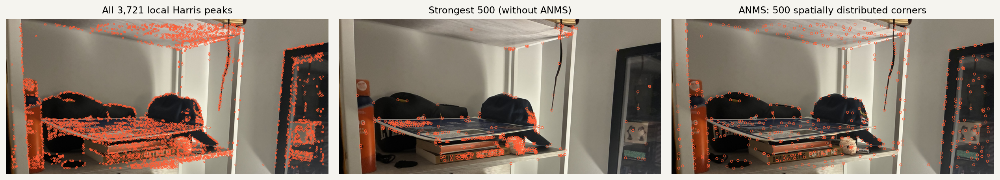
| Pair | Harris candidates (1 / 2) | Descriptors (1 / 2) |
|---|---|---|
| Living room and television | 3,375 / 6,098 | 2,500 / 2,500 |
| Kitchen counter | 5,269 / 5,477 | 2,500 / 2,500 |
| Bookshelf and doorway | 3,721 / 4,518 | 2,500 / 2,500 |
B.2: Normalized patch descriptors
Each ANMS corner describes an axis-aligned 40 x 40 grayscale neighborhood. The image is Gaussian blurred with sigma = 2 before sampling an 8 x 8 grid. Sample centers are five pixels apart, at offsets -17.5, -12.5, ..., 17.5; bilinear lookup handles the half-pixel positions. The larger support and blur reduce sensitivity to small localization errors.
d = (patch_8x8 - mean(patch_8x8)) / std(patch_8x8)
The flattened descriptor has 64 values. Flat patches with standard deviation at most 1e-6 are discarded. Bias/gain normalization removes additive brightness and positive contrast changes, but does not remove perspective deformation or reflections.
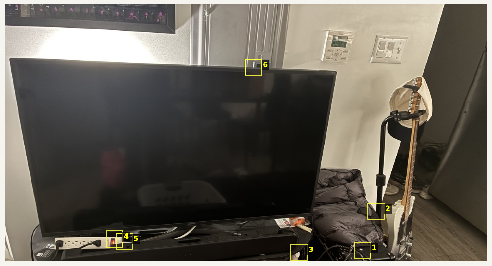
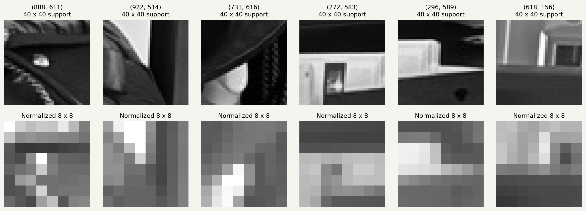
Across all retained descriptors, maximum absolute mean is 2.28e-14 and maximum deviation from unit standard deviation is 3.33e-16. A numerical test also verifies invariance to a positive affine intensity change.
B.3 / B.4: Matches - Living room and television
For every source descriptor, find its two closest reference descriptors by sum of squared differences (SSD). Retain a match when SSD1 / SSD2 < 0.80, and require that the reference feature also chooses this source as its nearest neighbor. This reciprocal check makes accepted matches one-to-one. An ambiguous zero/zero ratio is rejected.
The threshold is on squared distances, equivalent to an Euclidean distance ratio below sqrt(0.8), approximately 0.894. This permissive threshold preserves candidates in the low-texture scenes; geometric RANSAC then removes most of them. A small absolute SSD alone is unreliable for repetitive patches.
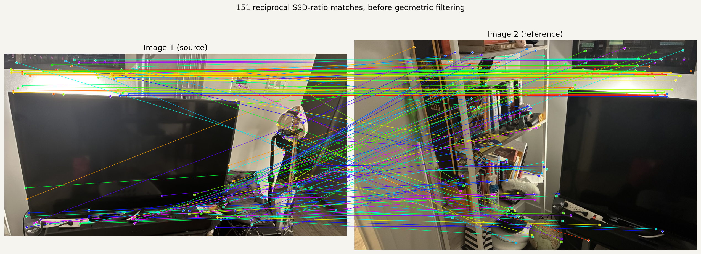
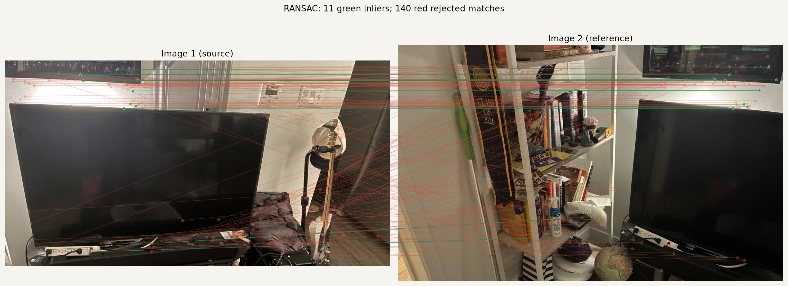
H = [ -0.0419409 -0.7222187 905.7964456 ] [ -0.0915907 0.7941954 63.7882040 ] [ -0.0007024 0.0000760 1.0000000 ]
H maps image 1 into image 2. RANSAC accepted 11 / 151 matches (7.3%) after 245,284 trials. Symmetric inlier RMS: 1.652 px; forward inlier RMS: 1.801 px. These are residuals on the selected consensus, not independent accuracy measurements.
B.3 / B.4: Matches - Kitchen counter
For every source descriptor, find its two closest reference descriptors by sum of squared differences (SSD). Retain a match when SSD1 / SSD2 < 0.80, and require that the reference feature also chooses this source as its nearest neighbor. This reciprocal check makes accepted matches one-to-one. An ambiguous zero/zero ratio is rejected.
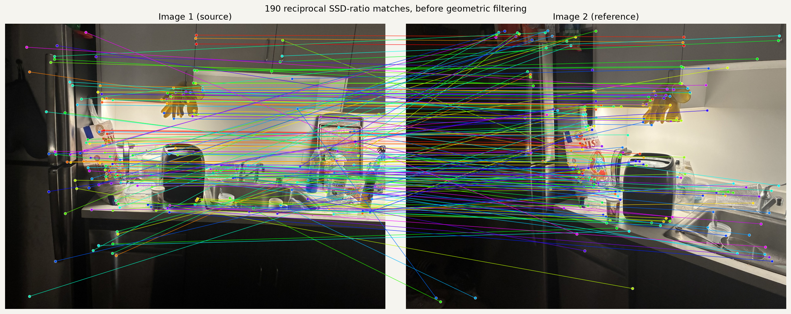
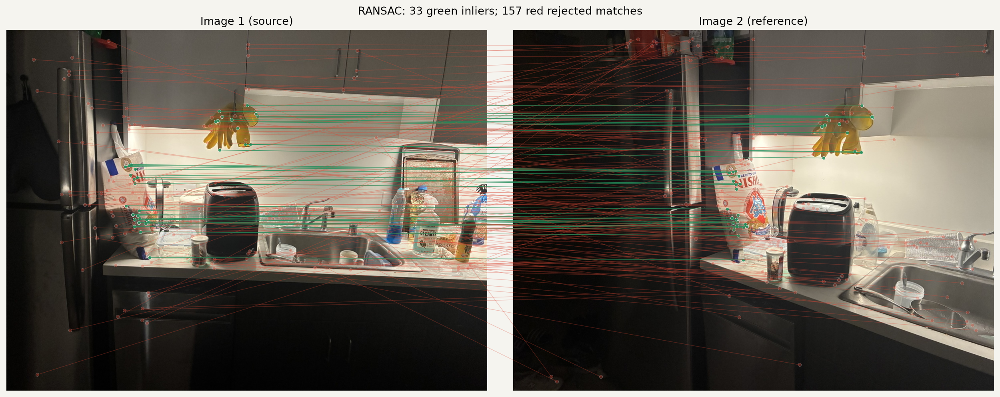
H = [ 0.4361997 -0.0346279 348.1029704 ] [ -0.1612760 0.8204812 75.0249164 ] [ -0.0005226 0.0000473 1.0000000 ]
H maps image 1 into image 2. RANSAC accepted 33 / 190 matches (17.4%) after 9,745 trials. Symmetric inlier RMS: 2.034 px; forward inlier RMS: 2.020 px. These are residuals on the selected consensus, not independent accuracy measurements.
B.3 / B.4: Matches - Bookshelf and doorway
For every source descriptor, find its two closest reference descriptors by sum of squared differences (SSD). Retain a match when SSD1 / SSD2 < 0.80, and require that the reference feature also chooses this source as its nearest neighbor. This reciprocal check makes accepted matches one-to-one. An ambiguous zero/zero ratio is rejected.
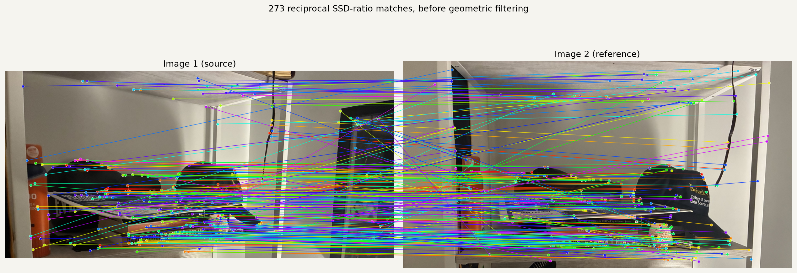
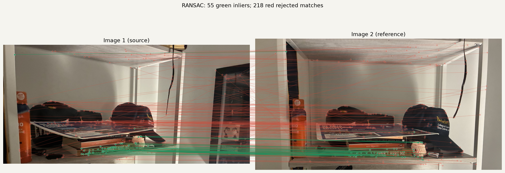
H = [ 0.8222620 0.0475989 100.8092378 ] [ -0.1241156 1.0913090 16.6425634 ] [ -0.0004015 0.0002235 1.0000000 ]
H maps image 1 into image 2. RANSAC accepted 55 / 273 matches (20.1%) after 4,509 trials. Symmetric inlier RMS: 1.643 px; forward inlier RMS: 1.800 px. These are residuals on the selected consensus, not independent accuracy measurements.
B.4: Robust homography estimation
The four-point RANSAC loop is implemented from scratch. Each trial samples four distinct matched pairs, fits H using the normalized least-squares solver from Part A, and scores all tentative matches. Degenerate samples are rejected by the homography solver.
e_forward = || project(H, p) - q || e_backward = || project(inverse(H), q) - p || e_symmetric = sqrt((e_forward^2 + e_backward^2) / 2) inlier = e_symmetric < 4 pixels
Checking both directions reduces support for nearly collapsed mappings. Models are ranked by inlier count, then median inlier error. The current inlier fraction w updates the sampling bound N = ceil(log(1 - confidence) / log(1 - w^4)), with confidence 0.999, at least 100 trials and at most 500,000. The random seed is 180 for every pair.
After sampling, refit H on the entire winning consensus. Up to ten consensus updates are allowed while the truncated symmetric squared-error cost does not increase. The returned mask is recomputed from the returned matrix. No library homography estimator, feature matcher, perspective warp, or RANSAC routine is used.
| Pair | Matches | Inliers | Symmetric RMS (px) | Alignment time |
|---|---|---|---|---|
| Living room and television | 151 | 11 | 1.652 | 28.98 s |
| Kitchen counter | 190 | 33 | 2.034 | 2.07 s |
| Bookshelf and doorway | 273 | 55 | 1.643 | 1.13 s |
Alignment time is one local CPU run of detection, ANMS, description, matching, and RANSAC. It excludes mosaic rendering and figure generation. It is not a benchmark against the manually selected point workflow.
The three comparisons below reuse the exact input bytes, intermediate balanced projection, bilinear sampler, and per-pair blending settings from Part A. Both results are shown on a common union canvas at the same pixel scale. The changed component is the estimated H. Part A's kitchen and bookshelf landmarks were feature-assisted and reviewed, so the baseline is labeled as the saved Part A fit rather than claiming every point was hand-clicked.
B.4: Mosaic - Living room and television
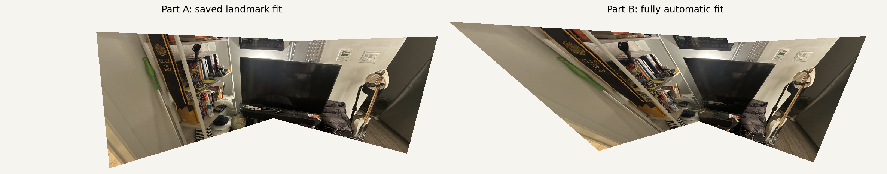
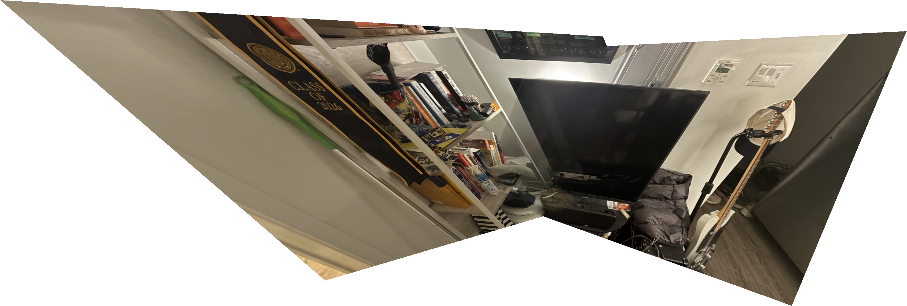
The two views extend the scene from the bookshelf to the guitar. The dark television has little texture; only a small consensus survives, so the automatic projection is sensitive to where those points lie. The power strip and lower television boundary show doubled structure, and the outer wall stretches. The small inlier residual does not guarantee a globally accurate mosaic.
Automatic canvas: 3,416 x 1,158 px. Blend: feather; balanced two-view projection. All geometric correspondences on the right were recovered from pixels.
B.4: Mosaic - Kitchen counter
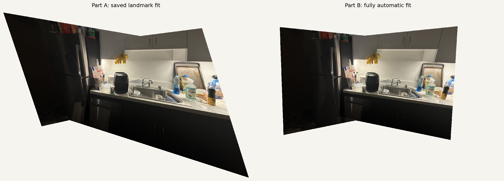
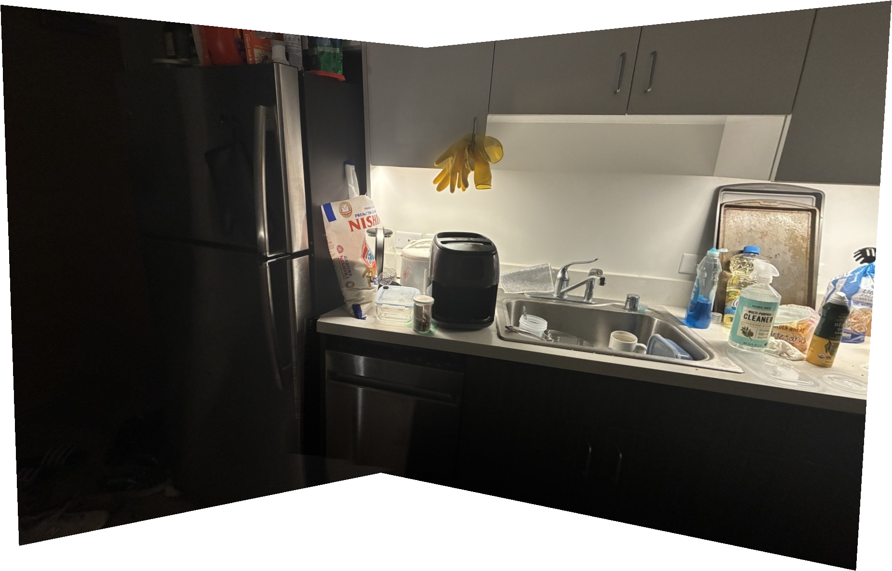
The automatic fit combines the refrigerator with the sink and counter. RANSAC excludes many matches that cannot share one H, improving consistency in its selected region. The cabinet, toaster, and foreground cups lie at different depths; local offsets and the difference in exposure remain visible. The seam hides some disagreement but does not correct it.
Automatic canvas: 1,853 x 1,186 px. Blend: seam; balanced two-view projection. All geometric correspondences on the right were recovered from pixels.
B.4: Mosaic - Bookshelf and doorway
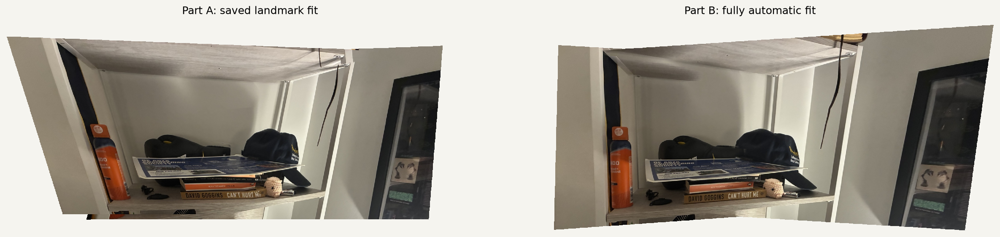
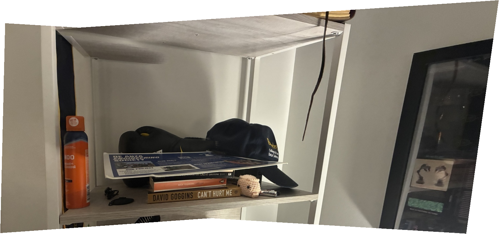
Book and sign texture supplies the largest consensus of the three pairs. The automatic fit joins the shelf and framed poster, while the selected seam keeps much of the printed text from one view. The shelf front, hats, hanging cord, and background wall do not occupy one plane, so their edges do not all register simultaneously.
Automatic canvas: 1,588 x 744 px. Blend: seam; balanced two-view projection. All geometric correspondences on the right were recovered from pixels.
B.4: Inspecting the overlaps
The central overlap crops below show each warped source separately and the blended result. These are the same output coordinates within each row; the crops are chosen from the overlap mask without using Part A landmarks.
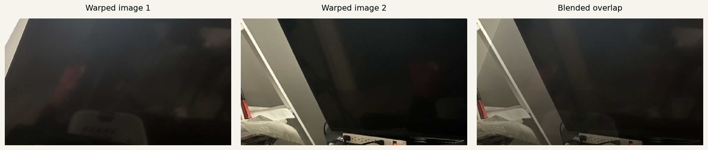
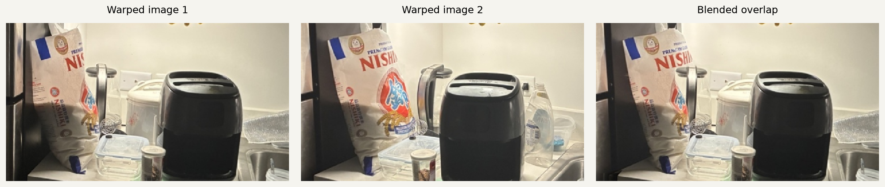
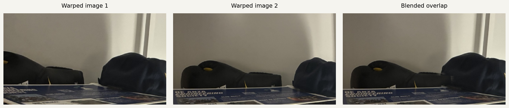
RANSAC answers which correspondences support one model. Feathering and seam selection answer how to combine the already warped colors. Neither step can make a nonplanar handheld capture exactly projective.
Part B: Observations and reproducibility
ANMS, descriptor normalization, ratio matching, and RANSAC address different failure modes. ANMS spreads limited feature capacity across an image; normalization handles brightness and contrast; the ratio test rejects ambiguous appearance; RANSAC rejects matches inconsistent with one homography.
The indoor photographs also expose the model's limits. Low texture reduces the number of useful matches, repeated book and cabinet patterns create ambiguity, and handheld parallax causes different depths to favor different homographies. A low residual on a small consensus should be interpreted alongside the spatial spread of inliers and visible seam quality.
The required B.1-B.4 pipeline is single-scale and axis-aligned. Optional B.5 multiscale, rotation-invariant, and panorama-recognition extensions are not claimed.
Sources
- CS180 Project 4B assignment: required simplifications and deliverables.
- Matthew Brown, Richard Szeliski, and Simon Winder. Multi-Image Matching using Multi-Scale Oriented Patches, CVPR 2005, sections 2-5. ANMS uses the paper's c = 0.9 criterion; descriptors use 8 x 8 samples five pixels apart, normalized to zero mean and unit standard deviation. Figure 6 motivates the nearest/second-nearest ratio.
- Provided Harris sample: reference for the harmonic response, 3 x 3 local maxima, and excluded border. This submission implements these operations in NumPy without scikit-image.
Reproduction
python main.py --download-inputs python part_b.py python -m pytest -q python build_report.py python export_pdf.py python package_submission.py
features.py contains the algorithms. partb.json stores all Part B settings. part_b.py produces figures, automatic point coordinates, match ratios, inlier masks, matrices, and timings in outputs/partb_metrics.json. The optional NPZ files preserve all selected descriptors. The original input checksums remain in sources.json; the combined report contains both Part A and Part B.